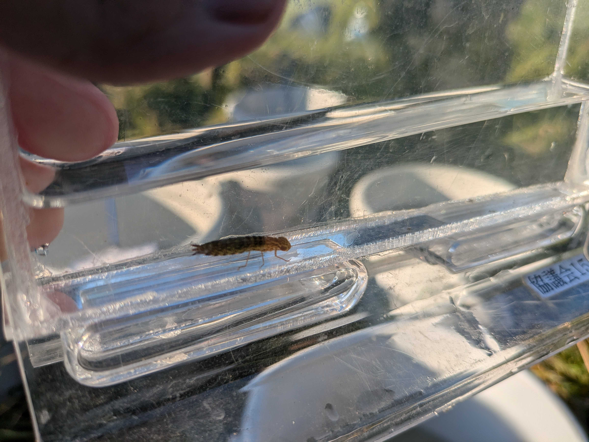

AQUA
水生生物部門：アクア
スキルアップガサガサ
アクアでは木曜日と土曜日に上田川でガサガサ（水生生物をたも網で採集すること）のスキルアップを狙うスキルアップガサガサを行っています。胴長やたも網は貸出されるので、ガサガサに興味のある人は参加してみてはいかがですか？


池干し
スキルアップガサガサに参加した人限定で池干しの手伝いに参加することができます！テレビなどであこがれを持つ人も多いでしょうからぜひ参加しましょう！
カメの調査
生物多様性センターと合同で行う活動としてカメの調査があります。捕獲した亀の甲羅の大きさをノギスで計測したり、けがの位置の記録などをし、ミシシッピアカミミガメ以外の亀以外は甲羅に個体番号を記録し元居た場所に返すといったことを行います。生態調査の流れを一通り行うものなので、本格的な生態調査をやってみたい人たちにおすすめです！